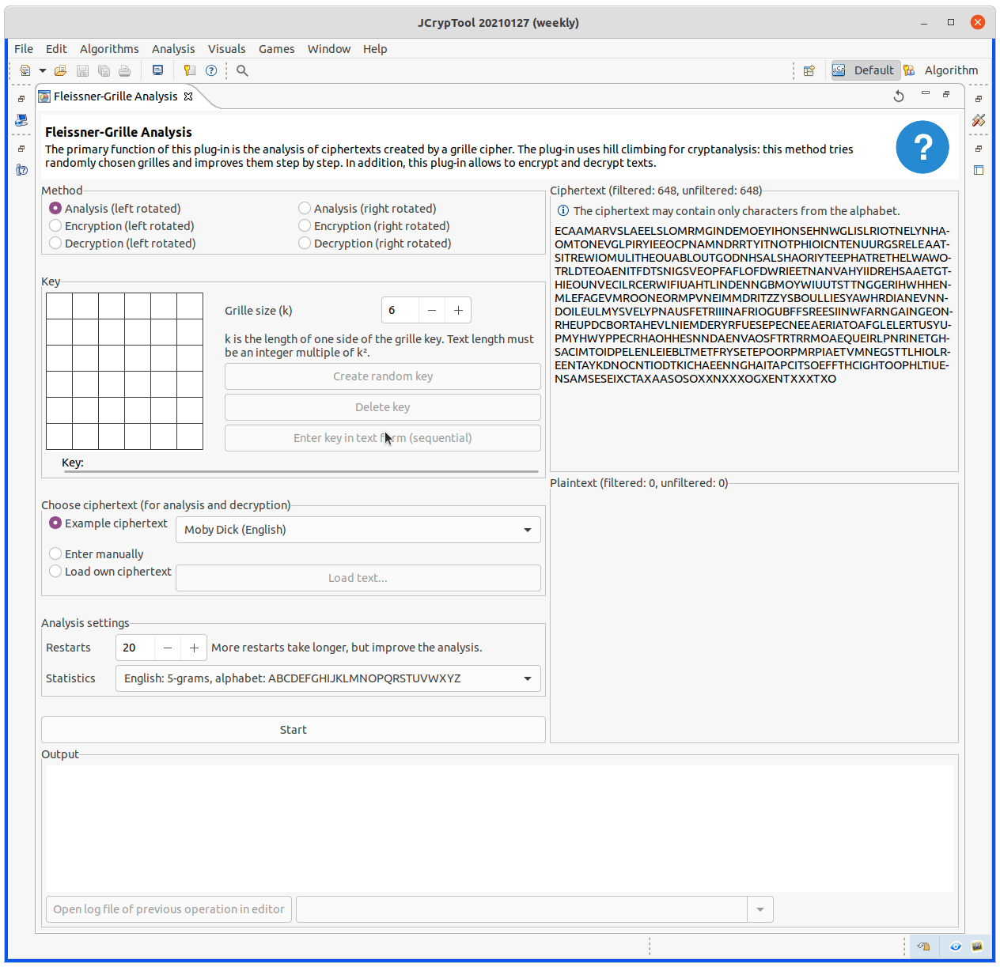
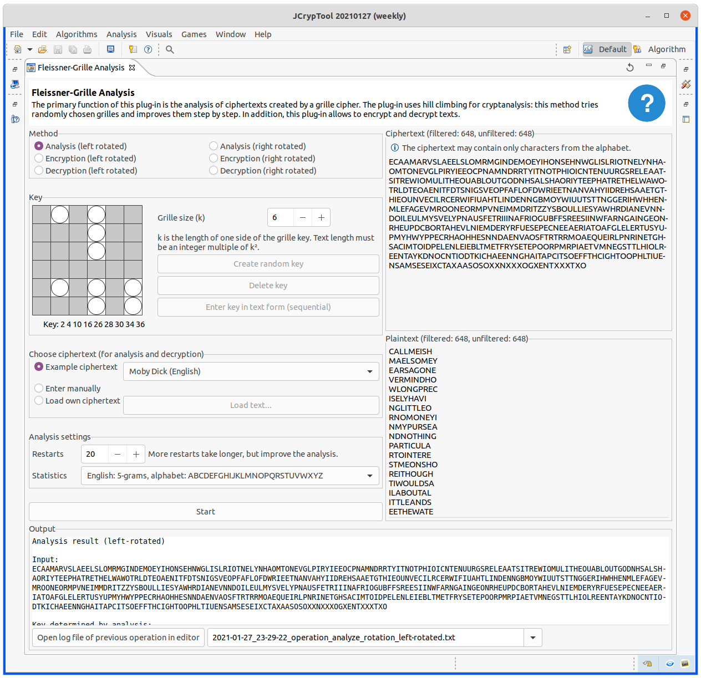

This plugin allows to encrypt and decrypt text with the grille square, but above all you can also break grille ciphertexts automatically (for clockwise-rotating and counter-clockwise rotating grilles; but currently only for even square sizes, soon also for odd square sizes). The maximum square size is 20 x 20.
If you have selected "Encrypt" as method and want to encrypt your own text, you must enter your text in the "Plaintext" field. If "Decrypt" or "Analysis" is selected as method, you must enter your text in the "Ciphertext" field.
In this help document, you find information about the cipher itself and how to use this plug-in.
A grille cipher is a technique for encrypting a plaintext by writing it onto a sheet of paper through a pierced sheet (of paper or cardboard or similar).
More details can be found in Wikipedia .
Initially, the plug-in has the following settings, so you can get started right away:

Click on the "Start" button to run the analysis.
It takes a moment for the mouse pointer to change and the status bar at the bottom right to indicate that a background job (for the analysis) is running. The following image shows the result:

In the field "Plaintext" you can see the result - output in lines of length 1/4 of the number of fields in the grille: so here of length \( 9 = 36 / 4 \).
CALLMEISH MAELSOMEY EARSAGONE VERMINDHO WLONGPREC ISELYHAVI NGLITTLEO RNOMONEYI NMYPURSEA ...
If you insert the appropriate special characters (not in the English alphabet), you get:
CALL ME ISHMAEL. SOME YEARS AGO, NEVER MIND HOW LONG PRECISELY. HAVING LITTLE OR NO MONEY IN MY PURSE A...
In the "Output" group (below) is the log, which is automatically regenerated after each startup.
In it you will find the key found and also the original key chosen for the randomly generated sample text:
7 9 11 ...,
(0,1) (0,2) (2,1)
As an example ciphertext, a text from the German Wikipedia for the Fleissner cipher was taken. The ciphertext generated by the left-rotating method is taken; the analysis is also chosen to be left-rotating. The German statistics are selected.
Input text from Wikipedia:
DWNIIK LEKFIL RIPONE PEIEDA EEEODI NIZAYE
JCT finds as plaintext:
NLINEENZY KLOPAEDIE WIKIPEDIA DIEFREIEO
The statistics of the automatic analysis do not perfectly map the language; therefore, texts may not be decrypted perfectly. In this example, the analysis seems to converge on a solution that still needs manual improvement. By swapping the top two lines and the bottom two lines, the correct solution is obtained.
In the group "Plaintext" is to enter the plaintext.
In the group title, the length is still specified: "filtered" means the length of the characters in the alphabet; "unfiltered" means the length of the original sample text (from which all non-alphabet characters are filtered out during filtering, and also lowercase letters are interpreted as uppercase letters, as is common in n-gram statistics).
You can copy the result and also decrypt it.
As the original ciphertext there had a mistake, you might use this correctly generated ciphertext:
PIENLZLALANIEGDSTFETHMOEEVEINONDTBRRMEAAUATNNMNPEOASROODPMFMHOAEMOTOEONDOAERPNXLAINEPFXECORPRDTEEIED THNETIUTNRIIOTYINEOWAINTDHMSSATOOURTINAGINONVATTEERDEDHDEUAMTROIINOENGSWALNRGAMTYAHTNESDAOEEIMSINTSA GAPBJOELSOENIHRSDHOMUAHRNDAYWTEMEIRLELERIAAITNFATAENRCTAHRRESHYOTVIICNLEIULCETSNEUAANRLRCOIHUATELSLI PWOEOENNSRGNSTELBSHBEAYSEUINDNCEISHNREGVOTUOFIEDNEBTAHRNEASCUENPAUNNSDWPIOEXITPTYUNGIFLIHKATSMVARAET
We get as plaintext
PLANSFORMANNEDMOONEXPEDITIONSORIGINATEDDURINGTHEEISENHOWERERAINANARTICLESERIESWERNHERVONBRAUNPOPULAR IZEDTHEIDEAOFAMOONEXPEDITIONAMANNEDMOONLANDINGPOSEDMANYTECHNICALCHALLENGESBESIDESGUIDANCEANDWEIGHTMA NAGEMENTATMOSPHERICREENTRYWITHOUTOVERHEATINGWASAMAJORHURDLEAFTERTHESOVIETUNIONSLAUNCHOFTHESPUTNIKSAT ELLITEVONBRAUNPROMOTEDAPLANFORTHEUNITEDSTATESARMYTOESTABLISHAMILITARYLUNAROUTPOSTBYNINETEENSIXTYFIVE
As bigger the grille and the shorter the ciphertext, the higher number of restarts should be set. So you might choose 50 restarts (or more). As the plaintext is English, please choose the English alphabet.
NVRDIEMHNEAT IRVOAEINFYIU BRNTTTEHSEUA FHSEREPEFDRF OORRMOSVTOHO EIDFNOTSHTUH RETRTEEEAMLE EUGGSTSRIELA TARIEGTEAMRY OBSFOUCTTOHT EMTRPHCOLIIE XPSIHRTEIEYN
The German wikipedia on the Fleissner grille has two examples: one left-rotated, one right-rotated. The grille size is 6. The transcriptions are as follows:
Right-rotated (ciphertext):
KWNILK LODPII AIPENE FEDEDR IEEEII NEZAYO
Left-rotated (ciphertext):
DWNIIK LEKFIL RIPONE PEIEDA EEEODI NIZAYE
The plaintext, in both cases, reads:
WIKIPEDIA DIE FREIE ONLINE ENZYKLOPAEDIE
It should be noted, that this plaintext is quite short and even with the right statistics (German), manual post-processing may be necessary.
The book Gaines, Helen (1956): Cryptanalysis - a study of ciphers and their solution has several examples. To find out grille sizes and solution is left as exercise to the reader.
page 35, Fig.22:
TSTHE TTUSH OEDGF RDOEO GRISA AMSNM QEUGI BRIEL NOSTH SICLS ETSWA THABR YPAE
page 35, Fig.23
AEKDS PVTOO NNAAO NRONP ROCTI EHTRE HNETI AFGSR HTNIL OVTEF FALMK IECLA ASNM
page 35, Fig.25
RNIII NGTFL AILNN DEETD RVEUS ESTHR EIGEY FIANO URRDL GYTNH AEONR NEKCD EEISE YBSEF WYPGR LOLOE UOFHP ATVER EHERA EDFMI TRHNE EISYT QTSII SAUSG IEAIC ASLLK LLTTX HVHEA RXAX